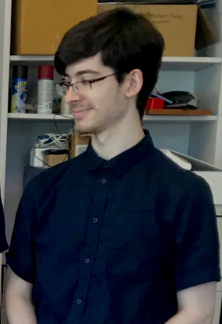

Meet the Research Team
One of my favorite parts about acaedmia is mentoring undergraduate students, and watching them learn and thrive in a research environment. My completed and on-going projects would not be possible without the dedicated, driven undergraduate students I am lucky enough to work alongside with.

Morgan Boyd
- Dual Major in Psychology and Cognitive Neuroscience
- Hobbies: Dancing, Playing the Piano, and Taking Long Walks
Maanasi Bulusu
- Major in Computational Neuroscience and Minor in Computer Science
- Hobbies: Reading, Painting, Exploring Netflix, and Volunteering
Camila Bodden

- Major in Biology with a Dual Minor in Spanish and Biomedical Engineering
- Hobbies: Playing for CMU's Varsity Soccer Team, Reading, and Growing House Plants
Matthew Komar
- Dual Major in Art and Human-Computer Interaction
- Website: Compuginger.com
- Github: @Streakman
- Hobbies: Nerf, Making VR games, 3D Modeling
Olivia Brand

- Major in Biological Sciences
- Hobbies: Playing for Carnegie Mellon Women's Soccer Team, Horseback Riding
Kaitlynn Cooper

- Major in Biological Sciences with a concentration in Psychology
- Hobbies: Playing Volleyball, Hiking with her Dog
Adrian Ma

- Dual Major in Cognitive Science and Human-Computer Interaction
- Hobbies: Games, Music, and Digital Art
Eileen Lee

- Triple Major in Art, Psychology, and Human-Computer Interaction
- Website: @eileenlee
- Hobbies: Drawing, Painting, Cooking, and Volunteering in the Community
Chenelle Miller
- Visiting PIER Research Experiences for Undergraduate (REU) Scholar from University of Virginia; Major in Psychology; Minor in African American Studies
- Hobbies: Volunteering at Charlottesville Middle School and UVA's Hospital, Taking Care of her pet Parakeets, and Gardening
George Whitfield
- Major in Electrical and Computer Engineering and Game Design
- Hobbies: Piano, Crochet, Hanging with friends, Origami
Emma Hu
- Major in Mathematical Sciences
- Hobbies: Bridge, Dancing, and Traveling
Adrian Mester
- Dual Major in Computer Science and Music Technology
- Github: @RedHippi
- Hobbies: Bird Watching in local parks, Playing Games with his parents
Where are they now?
Dominic Calkosz

- Dom graduated with a major in Computer Science and a Minor in Game Design.
- Github: @Dmcdominic
- He currently works as an Associate Game Designer at Blizzard Entertainment.
Suanna Moron
- Suanna graduated with a Dual Major in Computational Neuroscience and Psychology.
- She currently is the Research Coordinator at Stanford University's Educational Neuroscience Initiative Laboratory.
Kristy Zhang
- Kristy graduated with a Dual Major in Business Administration and Human-Computer Interaction.
- She was accepted into the competitive Master of Human-Computer Interaction (MHCI) Graduate Program at Carnegie Mellon University and currently works as a UX Research Associate at Google in California.
Sebastian Yang

- Sebastian graduated with a Dual Major in Information Systems, Statistics and Machine Learning and a Minor in Business Administration.
- Website: yukaiyang.com
- Github: @SCP650
- He currently works as a Virtual Reality Software Engineer at Meta in Seattle.
Marissa McAfee

- Marissa graduated with a Major in Chemistry
- She is commissioning as a Weather and Environmental Science Officer for the U.S. Airforce and was accepted into the Naval Postgraduate School's Meteorology and Operational Oceanography Program, earning a Master's degree in Meteorology and Physical Oceanography.
Kalpa Anjur

- Kalpa graduated with a Major in Computer Science and a Minor in Game Design.
- Github: @hitechlife
- She currently works as a Software Engineer at Salesforce.
Elizabeth Fulton
- Elizabeth graduated with a Major in Computational Neuroscience.
- She currently works as a Performance Research Analyst and at PowerTrain, Inc. and specializes in Technical Writing.
Emery Noll

- Emery graduated with a dual major in Biological Sciences and Pyschology.
- She was accepted into The Master of Science in Medical Sciences Program at Boston University on her journey to start Medical School.
Carter Williams
- Carter graduated with a major in Logic and Computation and a minor in Game Design.
- Github: @gantar22
- He currently works as a Game Engineer at Filament Games, an industry-leading educational game developer company.
Aria Tsegi-Moore

- Aria was a visiting PIER Research Experiences for Undergraduate (REU) Scholar majoring in Psychology from Stony Brook University.
- She was accepted into Columbia University's Bridge to the Ph.D. Program in STEM.
Marie Shaw

- Marie graduated with a dual major in Electrical Computer Engineering and Human Computer Interaction with a minor in Integrative Design, Arts and Technology.
- Github: @mnshaw
- She currently works at YouTube in California.
Xavier Artache
- Xavier graduated with a dual major in Mechanical Engineering and Computer Science with a dual minor in Business and Robotics.
- Github: @xaxafour
- He currently works at the startup AutoX in California, which programs self-driving vehicles.
Nicole Ang
- Nicole graduated with a dual major in Statistics and Machine Learning and Information Systems.
- Github: @nicoleang
- She currently works at Amazon in Seattle as a Software Development Engineer.
Jonathan Epps

- Jonathan was a visiting PIER Research Experiences for Undergraduates (REU) Scholar majoring in Political Science from Morehouse College.
- He was accepted into The Fulbright U.S. Student Program in Brazil and is currently pursuing his Juris Doctor Degree at Yale Law School.
Nick Lee

- Nick graduated with a major in Electrical and Computer Engineering
- Github: @tabbyson
- He currently works as a Power Generator Engineer in Virginia.
Bridget Tan
- Bridget graduated with a major in Electrical and Computer Engineering and a minor in Sound Design
- Github: @bridget-tan
- She was accepted into Carnegie Mellon's Master's of Science Electrical and Computer Engineering Graduate Program and is currently working as a Software Engineer at The Johns Hopkins University Applied Physics Laboratory.
Melissa Pocsai
- Melissa graduated with a B.S. in Psychology from University of Pittsburgh
- She was accepted into The City University of New York’s Clinical Psychology Ph.D. Program.